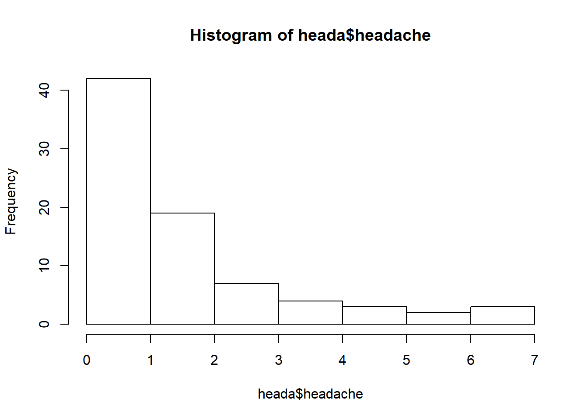
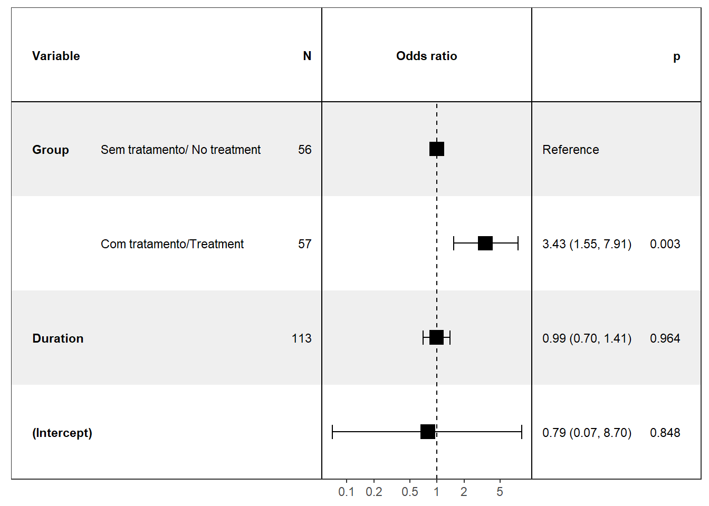
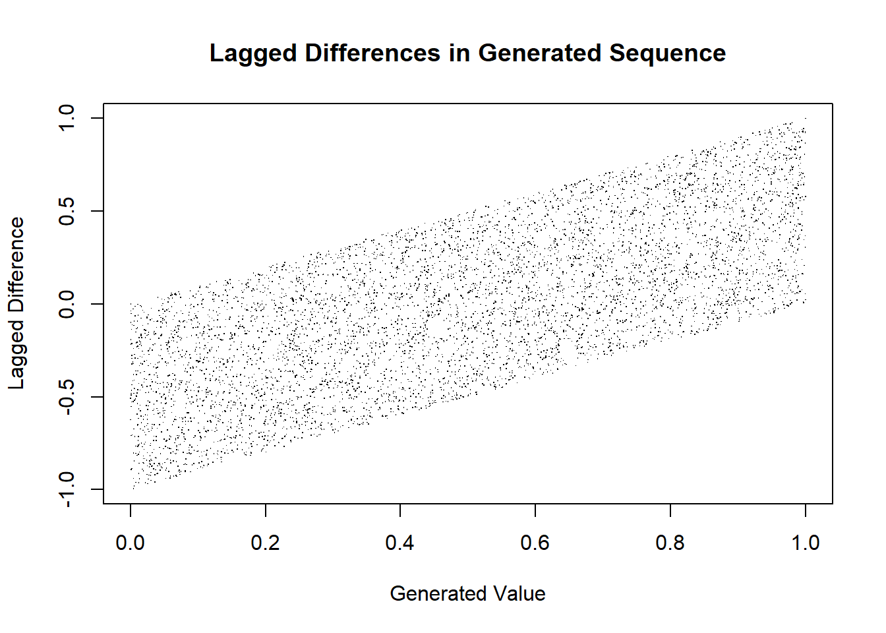

2.7 assignment Second Lead from ECG
Assignment from Lesson 3
2020-02-29
Consider the file A0001.mat from the PhysioNet Challenge https://physionetchallenges.github.io/2020/. Using R:
Plot the histogram of all the 12 ECG leads with the respective density curve.
Using the second lead inverted, apply the expectation-maximization algorithm with 2 and 3 latent classes.
Plot the densities for each of the latent classes.
Which point in the ECG belongs to each latent class? Plot the ECG in which each point has a color corresponding to the class to which it belongs.
Use the difference between the averages of class distribution as the convergence criterion.
Generate 1000 data points at random according to a single distribution fitted to the original data.
Generate 1000 data points at random according to a mixture of distributions fitted using one of the previous EM computed in line b.
2.7.1 Defining a function for expectation-maximization (EM) algorithm
# function for Expectation-Maximization algorithm
emf<-function(xx = vv, # a vector with the data
m = 2, # number of clusters
method = "crisp", # method used for parameters estimation in each class; options: "crisp" or "soft"
itera = 10, # number of iterations
eps = 0.01, # the accepted error to converge (e)
params = "random", # initial parameters, if "random" 'm' values from 'xx' are randomly select, or we can input a vector with 'm' values
main="ECG", # histogram title
seed = 0 # value for set.seed()
){
medias=NA
desvpadrao=NA
if (params == "random") {
set.seed(seed)
param.mean<-sample(xx,m)
param.sd<-rep(sd(xx)/m,m)
} else {
param.mean<-params
param.sd<-rep(sd(xx)/m,m)
}
for (k in 1:itera){
densities<-sapply(1:m,
function(i){dnorm(xx,
mean=param.mean[i],
sd=param.sd[i])})
relevance<-t(apply(densities,1,function(l){l/sum(l)}))
attrib<-t(apply(relevance,1,
function(l){replace(rep(0,m),which.max(l)[1],1)}))
# Re-estimates the parameters of the probability distribution of each class
if (method == "crisp") {
## M-step (alternative 1: crisp)
param.mean.new<-sapply(1:m,
function(j){mean(xx[attrib[,j]==1])})
param.sd.new<-sapply(1:m,
function(j){sqrt(sum(relevance[,j]*(xx-param.mean[j])^2)/sum(relevance[,j]))})
} else {
## M-step (alternative 2: soft)
param.mean.new<-sapply(1:m,
function(j){sum(xx*relevance[,j])/sum(relevance[,j])})
param.sd.new<-sapply(1:m,
function(j){sqrt(sum(relevance[,j]*(xx-param.mean[j])^2)/sum(relevance[,j]))})
}
# convergence the maximum number of iterations (k).
cat("iteration", k, "evolution:",
dif<-sum(abs(param.mean.new - param.mean)), "\n") # using the difference between the averages of class distribution as the convergence criterion.
if(dif < eps) break # the accepted error to converge (e)
param.mean<-param.mean.new
param.sd<-param.sd.new
}
## ploting the histogram and density curve for the vector of data
hist(xx, density = 20,
main=main,
xlab="", freq=F, ylim = c(0,0.005))
lines(density(xx),
lwd=2,col="black")
# plot(xx, col=apply(-densities,1,which.max),
# xlab = "Index",
# ylab = "ECG Values", main = "Colored by class") #plot colours according to vector densities
## save means, std deviations and classes' attributes on a list
result<-list(medias = param.mean,
desvpadrao = param.sd,
classe = as.data.frame(attrib))
}2.7.2 reading the data and ploting the leads distribution
## R.matlab v3.6.2 (2018-09-26) successfully loaded. See ?R.matlab for help.##
## Attaching package: 'R.matlab'## The following objects are masked from 'package:base':
##
## getOption, isOpen# after unzip the files, I took the first file
fA1<-readMat("2.UploadedData/A0001.mat")$val
fA1<-t(fA1)
par(mfrow=c(3,4))
# Ploting the histogram of all the 12 ECG leads with the respective density curve.
for(i in 1:12){
hist(fA1[,i], density = 10,
main=paste("ECG lead",i, sep = " "),
freq=F,
ylim=c(0,max(density(fA1[,i]*(-1))[["y"]])),
xlab="ECG values")
lines(density(fA1[,i]),
lwd=2,col="black")
}
2.7.3 EM algorithm for 2 latent classes
par(mfrow=c(1,1))
# expectation-maximization algorithm with 2 latent classes and a maximum 50 iterations.
res<-emf(xx = fA1[,2]*(-1), itera = 50, m=2, method = "crisp", main = "second lead inverted", seed = 10)## iteration 1 evolution: 63.64733
## iteration 2 evolution: 46.32738
## iteration 3 evolution: 52.78091
## iteration 4 evolution: 23.65685
## iteration 5 evolution: 13.68977
## iteration 6 evolution: 10.54316
## iteration 7 evolution: 9.96314
## iteration 8 evolution: 7.105816
## iteration 9 evolution: 5.806118
## iteration 10 evolution: 4.504107
## iteration 11 evolution: 4.9698
## iteration 12 evolution: 5.118377
## iteration 13 evolution: 5.773136
## iteration 14 evolution: 6.764423
## iteration 15 evolution: 5.433114
## iteration 16 evolution: 7.445487
## iteration 17 evolution: 8.256206
## iteration 18 evolution: 7.612994
## iteration 19 evolution: 12.67447
## iteration 20 evolution: 9.597814
## iteration 21 evolution: 5.658197
## iteration 22 evolution: 2.98443
## iteration 23 evolution: 2.079856
## iteration 24 evolution: 2.490897
## iteration 25 evolution: 0# adding density curves from the 2 clusters
lines(density(rnorm(1000, res$medias[1], res$desvpadrao[1]), bw = 40),lwd=2,col=3)
lines(density(rnorm(1000, res$medias[2], res$desvpadrao[2]), bw = 40),lwd=2,col=4)
## column with 2 classes to classify data from each cluster
attach(res$classe)
classe2<-ifelse(V1 == 1, 3 ,4) # create 'm' classes
detach()
# ploting ECG inverted points according with the latent class it belongs to
plot(1:length(fA1[,2]), fA1[,2]*(-1), col=classe2, pch=20,
xlab="index", ylab="2nd lead ECG",
main = " ECG colored by class (m=2)")
2.7.4 EM algorithm for 3 latent classes
par(mfrow=c(1,1))
# expectation-maximization algorithm with 3 latent classes and a maximum 50 iterations.
res<-emf(xx = fA1[,2]*(-1), itera = 50, m=3, method = "crisp", main = "second lead inverted", seed = 10)## iteration 1 evolution: 175.0321
## iteration 2 evolution: 84.11333
## iteration 3 evolution: 41.73523
## iteration 4 evolution: 43.49741
## iteration 5 evolution: 28.14147
## iteration 6 evolution: 11.77696
## iteration 7 evolution: 9.002154
## iteration 8 evolution: 6.878037
## iteration 9 evolution: 3.751731
## iteration 10 evolution: 4.932522
## iteration 11 evolution: 0.6580674
## iteration 12 evolution: 0# adding density curves from the 3 clusters
lines(density(rnorm(1000, res$medias[1], res$desvpadrao[1]), bw = 40),lwd=2,col=3)
lines(density(rnorm(1000, res$medias[2], res$desvpadrao[2]), bw = 40),lwd=2,col=4)
lines(density(rnorm(1000, res$medias[3], res$desvpadrao[3]), bw = 40),lwd=2,col=5)
## column with 3 classes to classify data from each cluster
attach(res$classe)
classe3<-ifelse(V1 == 1, 3 ,
ifelse(V2 == 1, 4, 5)) # create 'm' classes
detach()
# ploting ECG inverted points according with the latent class it belongs to
plot(1:length(fA1[,2]), fA1[,2]*(-1), col=classe3, pch=20,
xlab="index", ylab="2nd lead ECG",
main = " ECG colored by class (m=3)")
2.7.5 Generating 1000 data points at random with bootstrapped, with guassian distribution and EM with 3 clusters.
## length of data set generation
n<-1000
# original sample data set
sample<-fA1[,2]*(-1)
# bootstrapped sample data set
sample.obs<-sample(fA1[,2]*(-1), size=n, replace = TRUE)
# gaussian generated data set
sample.simple<-rnorm(n,mean=mean(fA1[,2]*(-1)), sd=sd(fA1[,2]))
# EM model generated data set
#classes<-apply(attrib, 1, which.max) # using attrib define previously, to calculate the number of observations in each class
class.prop<-prop.table(table(classe3)) # calculate percentage of each class
m<-3
set.seed(523)
sample.classes<-sample(1:m, size=n, replace=TRUE, prob=class.prop)
sample.prop<-prop.table(table(sample.classes))
sample.values<-round(unlist(sapply(1:m,
function(j){
rnorm(n*sample.prop[j], # generating number with the proportions of the two classes we identified previously
mean=res$medias[j], # parameters defined previously
sd=res$desvpadrao[j]) # parameters defined previously
})),0)
# Plotting results
par(mfrow=c(2,2))
hist(sample, freq = F, main = "Observed data", ylim = c(0,0.004))
lines(density(sample))
hist(sample.obs, freq = F, main = "data points sampled from observed data", ylim = c(0,0.004))
lines(density(sample.obs))
hist(sample.simple, freq = F, main = "data points generated from sample distribution", ylim = c(0,0.004))
lines(density(sample.simple))
hist(sample.values, freq = F, main = "data points generated from EM (m=3)", ylim = c(0,0.004))
lines(density(sample.values))